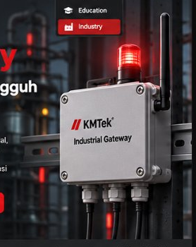

Produk Basic Maintenance
Paket IoT untuk monitoring kondisi peralatan (getaran, suhu, jam operasi) dan perawatan preventif.
Solusi perangkat IoT yang andal, aman, dan siap diintegrasikan untuk kebutuhan monitoring, kontrol, dan digitalisasi operasi industri Anda.
Lihat solusi industri →
Paket IoT untuk monitoring kondisi peralatan (getaran, suhu, jam operasi) dan perawatan preventif.
Gateway IoT industri untuk mengumpulkan, mengolah, dan mengirimkan data secara aman.
Beragam sensor industri (suhu, tekanan, kelembaban, getaran, dll) untuk pemantauan operasional yang akurat.
Perangkat IoT yang andal untuk meningkatkan keandalan, efisiensi, dan produktivitas industri Anda.